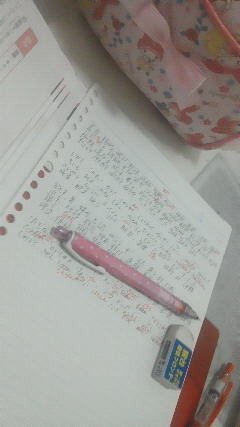

| 2012/05 22 Tue | ひめたん大図鑑１６だよ（2012 年２月 |
1日遅れちゃったけど、5月21日
みくもってぃお誕生日おめでとうー(*^^*)♪
ひめたんは明日からのテストに向けて頑張ってます!
ひめきゅんのみなさん、いつもコメントありがとーう

385
 放送部ってなにやるん？
放送部ってなにやるん？
放送部ってなにやるん？
コンクールみたいなのあるのかな？
コンクール。ありますね(・∀・)
校内放送、掃除の時の音楽、番組作りなどなど★
楽しかった。引退したくなかった。帰りたいー!
386
やってみたいアルバイトは？
やってみたいアルバイトは？
ちっちゃい頃からパン屋さんに憧れてる(*^^*)
ひめたんパン屋さんが大好きなんですよ!
あんな美味しそうなパンと一緒にずっと居たいと思いませんかー？
あとリアルに、高校生なったらレジ打ちしたかったー。
ピっピって。楽しそーう(o>ω<o)
387
ひめたんの巻き髪めっちゃ可愛いわー自分でまいてるん？
ひめたんの巻き髪めっちゃ可愛いわー自分でまいてるん？
いやいやーヘアメイクさんに巻いてもらいましたよ^^
これに乃木坂の新衣装着て昨日はばっちし撮影してまいりました(`・・)ゞ
ツインより巻いた方がいいーってメンバーの声が多かったのよねこれが。
みなさんどっち派ですかー？
388
ひめたんはサンフレッチェ広島っていうサッカーチーム知ってる？
ひめたんはサンフレッチェ広島っていうサッカーチーム知ってる？
もちろんもちろん(^ω^)
...ゆーて全然詳しくないです。
マスコットのあの子可愛いと思うわら
もっと勉強して出直してきますー!!!!!
389
ほんっとにお疲れ様です!!!ご褒美に何か買ってあげる(-^○^-)笑
ほんっとにお疲れ様です!!!ご褒美に何か買ってあげる(-^○^-)笑
今欲しいもんとかある〜!?!?というか今度ディズニー行くかもだから、
お土産で買って来て欲しいもの!!
えーほんとにー？ありがとうございます(。・ω・。)
それならぎゅーってできるサイズの可愛いぬいぐるみがほしい!!!
最近人肌恋しくて←え
890
好きな映画は？
好きな映画は？
いっちゃん最近だと、乃木坂の研修の時にＡＫＢさんのドキュメンタリー映画見たかな。
あーれは刺激になりましたと思います!
レンタルってやっとんかな？オススメします♪
391
ひめたんのすぐ上に、写ってはいけないもの(色々な意味で。)が、
ひめたんのすぐ上に、写ってはいけないもの(色々な意味で。)が、
写っていませんか？
問題なければ良いのですが...。
ひめたん(*ゝω・*)ノその56のあの写メのことですねー
いやむしろ可愛いからいいかなーと思ったり∩^ω^∩
もちろんちゃーんと本人には許可取ってますよっ
ちなみに誰かわかりますか？答えは後日っ★
393
財布を落としました。それをひめたんが見てました。
財布を落としました。それをひめたんが見てました。
財布の中を見たらひめたんの写真と現金100万円くらい入っていました。
財布を落とした事に気付いていません。
さて、ひめたんどうする？※面白い答えを期待しますW
いやーん面白さ求めんでー!!!!!
リアルに答えると、まずお財布の中身は見ないので
ひめたんの写真詰め込んでも大丈夫(`・ω・')わら
見たって設定なら...
とりあえず必死で追い掛けるかなー。足遅いから転けないといいなー。
んで届けたのちに、
「...パフェ食べたいなー(д)」とかね♪ふふふ
ひめたんの写真の映りがイマイチなら、こっそりトレードしておくのでお許しを。
394
姫ちゃん的にDDってどうなんでしょう...応援してていいのかな
...
姫ちゃん的にDDってどうなんでしょう...応援してていいのかな
...
395
個別でひめたん取ったよー!もっといっぱい取った方がいい？笑
個別でひめたん取ったよー!もっといっぱい取った方がいい？笑
他のメンバー行こうか迷ってるんだよねー笑
ひめたんのことちょっとでも気にしてくださってるってだけで嬉しい(ω)
だから好きな子は何人でも応援してあげてください!
そっからひめたん単推しにさせるのがひめたんのお仕事ですから(`・・')どやっ
396
ひめたんー(^O^)／名古屋個別取ろうかと思うんだけど、
ひめたんー(^O^)／名古屋個別取ろうかと思うんだけど、
どんなこと話そう？
んーどんなこと話そっかなー♪
そうだよね。聞きたいことは全部ブログで質問しとるもんね。
何でもいいよ？にらめっこでもしりとりでも指相撲でも何でも!
397
9枚じゃ少ないかなー？？？
9枚じゃ少ないかなー？？？
(。・ω・。)
398
 ひめたん握手何回も行ったらしつこい?
ひめたん握手何回も行ったらしつこい?
ひめたん握手何回も行ったらしつこい?
まったくしつこくないないー
むしろ何回でもきてほしい!
だって。だってだってだって。
寂しいじゃん(*/ω＼*)？
399
握手会部活で行けなくなったら怒っちゃう?(;'д`)
握手会部活で行けなくなったら怒っちゃう?(;'д`)
泣いちゃうーううぅ('・д・)

(*´・ω・*)ひめたん
コメント(80)
2012/05/22 00:24